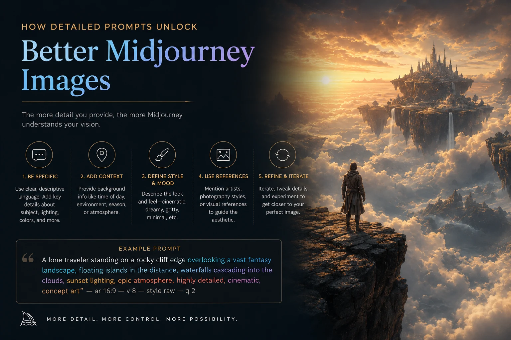

The short version
V8.1 became Midjourney's default model on June 10, 2026, replacing V8 (which had only been default since March). If you've still got old guides bookmarked that talk about V7 as current, they're out of date - this is a fast-moving space right now.
There are four real changes worth knowing about.
HD images without an upscale step
V8.1 generates roughly 2K resolution images directly, no separate upscale pass required. For anything headed to print or a large display, this alone is worth the update.

Image Prompts are back
Image Prompts - dropping a reference image directly into your prompt alongside text - had been quietly missing in earlier V8 builds. V8.1 brings it back, which matters a lot for anyone doing consistent-character or consistent-style work.
A shortener for long prompts
If you write long, detailed prompts (I do, especially for anything going into The Orb Story The Orb Story concept work), V8.1 added a Prompt Shortener tool that condenses an overlong prompt down without losing the intent. Useful for cleaning up a prompt that's grown messy over a dozen edits.
The Orb Story concept work), V8.1 added a Prompt Shortener tool that condenses an overlong prompt down without losing the intent. Useful for cleaning up a prompt that's grown messy over a dozen edits.
Describe got an update too
The Describe tool - upload an image, get prompt text back - was refreshed alongside V8.1. Early results suggest tighter, more usable prompt output than the previous version.
One setup step people miss
Before any of this works the way you'd expect, there's a Global V7/V8 Personalization Profile toggle that has to be turned on first. It's easy to miss and explains a lot of "why isn't this working" confusion in the Midjourney Discord right now.
Worth watching
V8.2 is already in preview as of early July - if the pattern holds, expect it to become default sometime in the next couple months. This one moves fast.